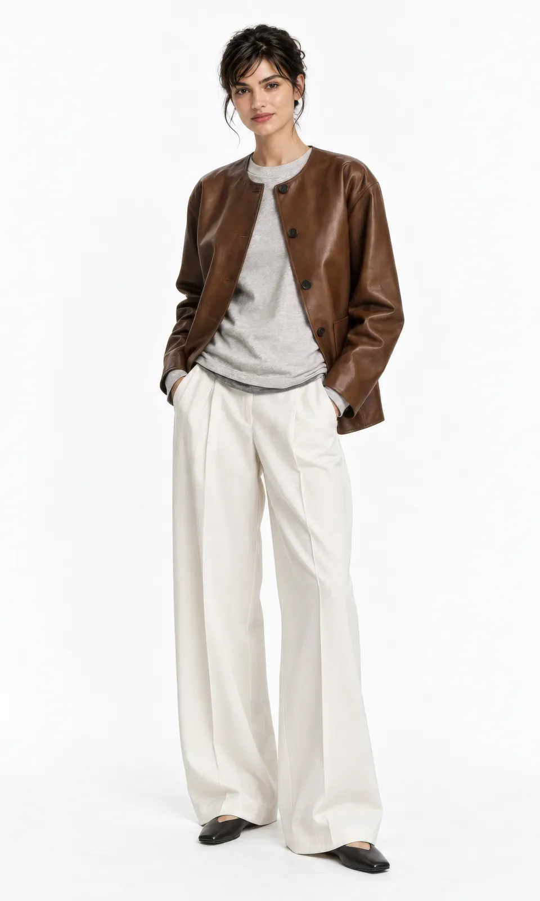
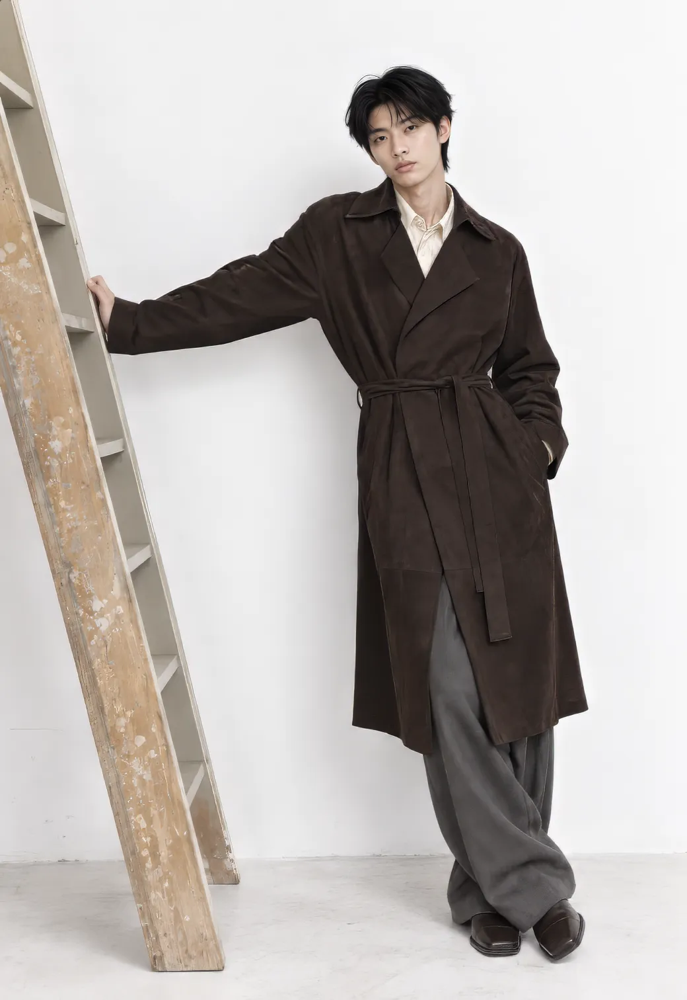
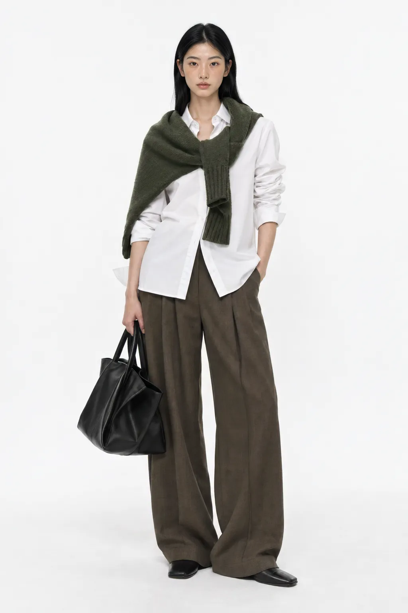
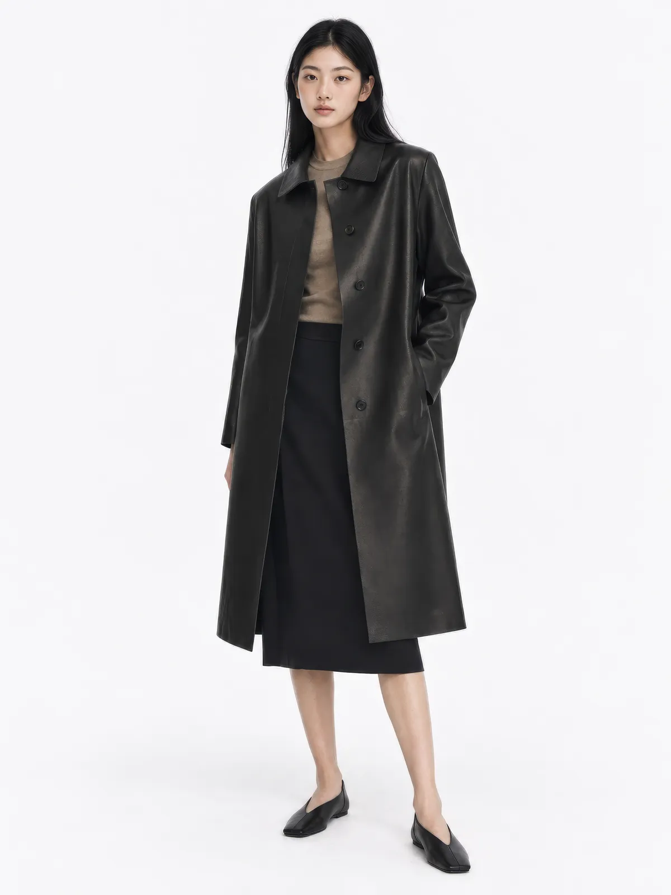

先确定方向
明确观众、产品特征与使用场景，确定图像想传达的情绪。
让服装进入画面，
让画面长成世界。

THE STUDY / 视觉研究
Wearable Worlds 是 LoneTree 已公开的时装图像系列。画面围绕人物、轮廓、材质与空间留白展开，让不同造型既有独立气质，也能被放在同一视觉语境中阅读。
比起把作品堆成连续的缩略图，这里把它们编排为近景、全身、动作与细节的节奏。访客先看到方向，再看到图像之间的关系。
说明：本页是基于现有公开作品的编辑式导读；不代表未经披露的品牌委托、实测生产流程或商业效果。

让每一个画面有自己的角色，
同时保留系列的呼吸感。


明确观众、产品特征与使用场景，确定图像想传达的情绪。
用构图、光线、材质与人物一致性让系列能在不同版面延展。
交付前逐一核对比例、服装细节、表达准确度与渠道适配。
上述是 LoneTree 面向类似项目的创作方法，不是对本系列具体制作步骤的未经验证陈述。